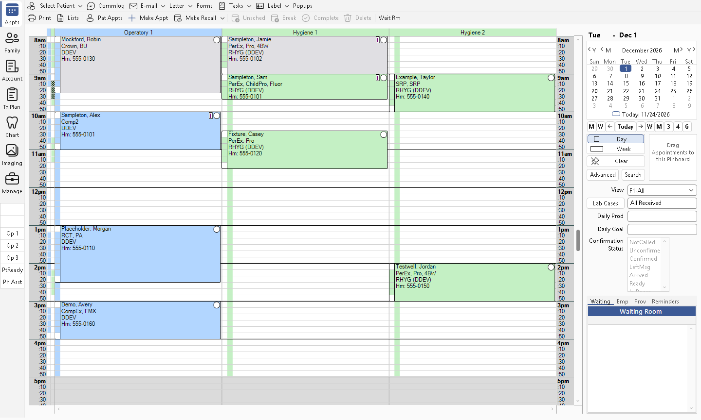
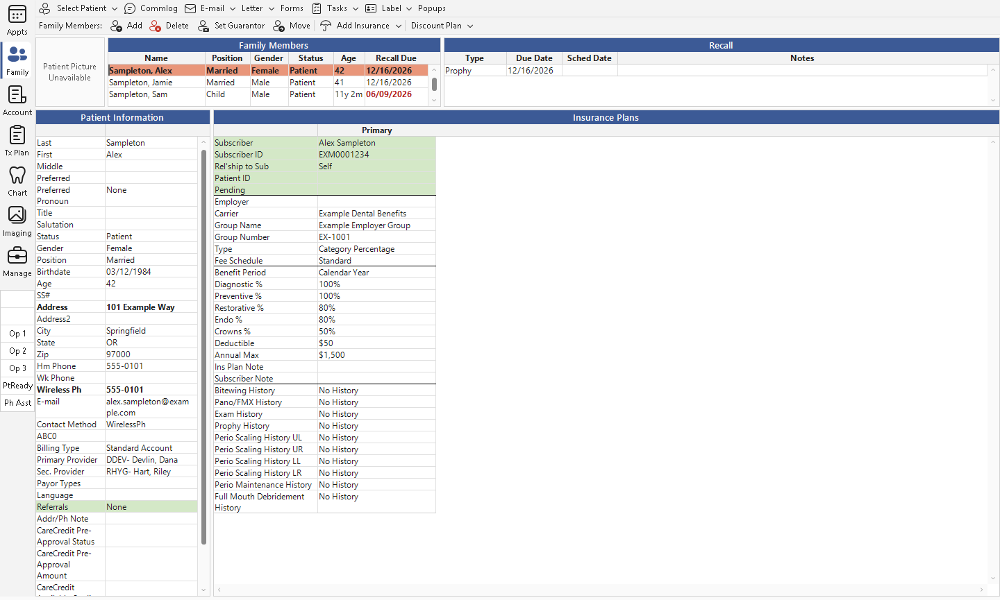
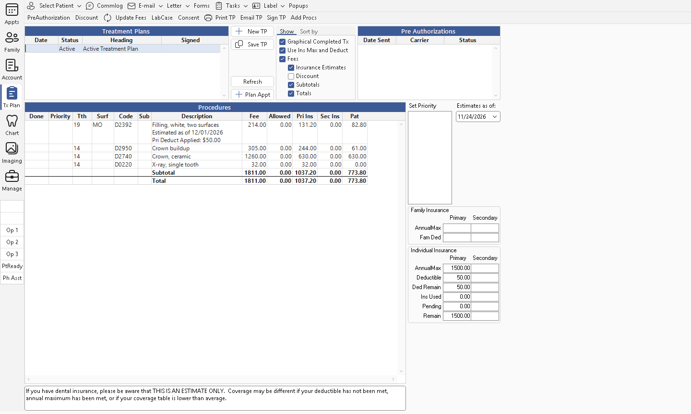
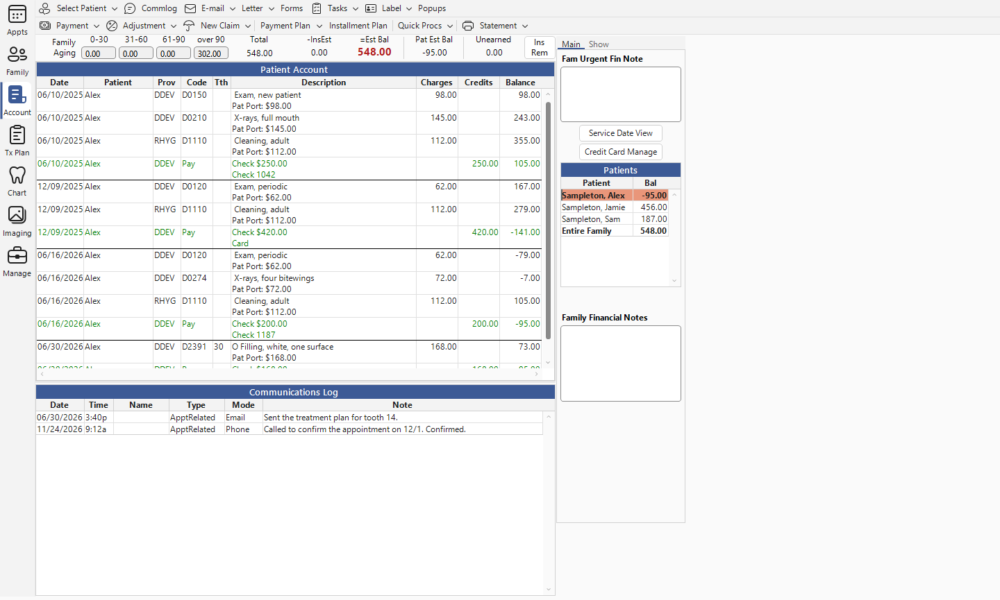
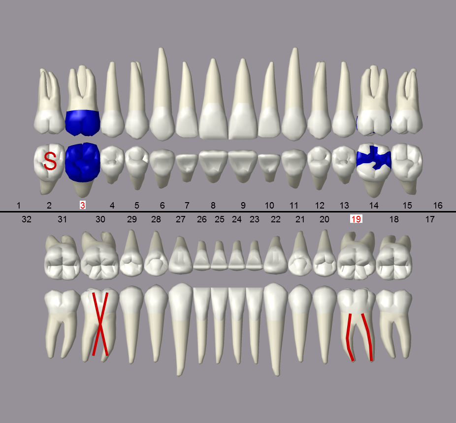
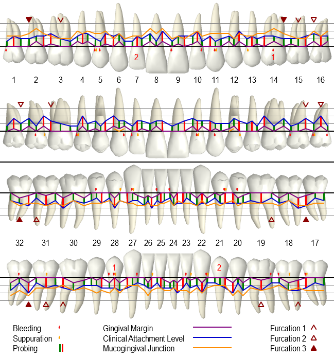
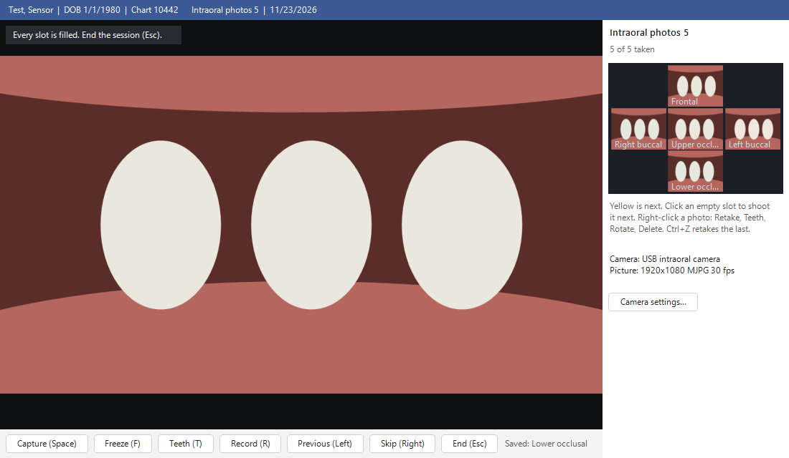
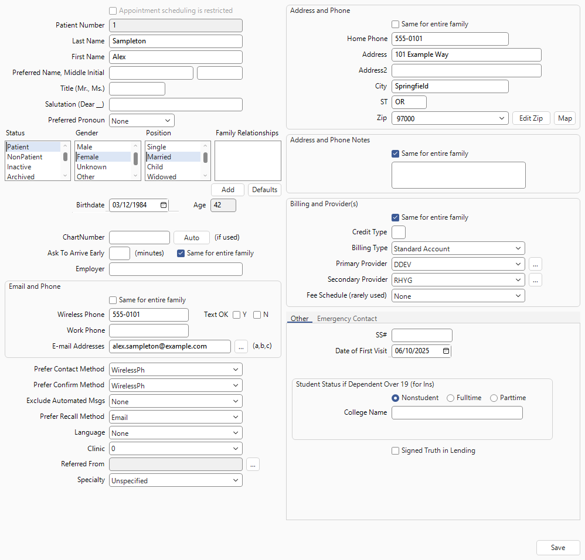
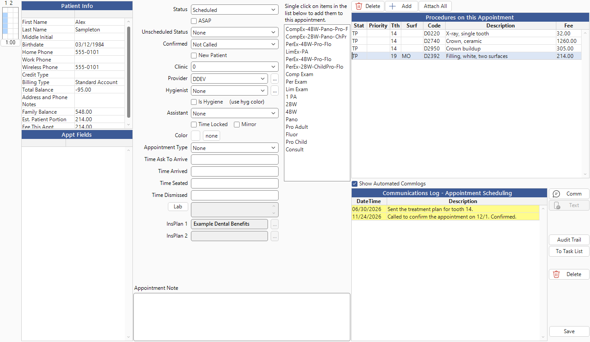

Free, open-source practice management for dental offices
Open PMS - Dental (OpenPMS) runs a dental practice on Windows: scheduling, charting, billing, insurance, imaging and reports. Derived from Open Dental, heavily extended: it grew from the Open Dental source code, developed in the open, on a modern 64-bit .NET, and it never phones home.
- GNU GPL v2 or later
- Windows 11, 64-bit
- .NET 10, self-contained
- MariaDB
Screenshots
The program's own windows, with fictional patients and data only. Select a picture to see it full size.


















How it differs from Open Dental
Derived from Open Dental, heavily extended. Most of the program is still Open Dental's code; around it is a large body of new and rewritten work.
No Open Dental HQ
No eServices, registration keys, update servers or help browser. A test suite checks on every run that nothing calls Open Dental's servers.
Features through 26.2, re-implemented
Open Dental's public source stops at 24.3.63. Later features are written again from the public manual, release notes and database documents, on the Open Dental 26.2.0 schema.
.NET 10, 64-bit
Moved from .NET Framework 4.8 (32-bit) to .NET 10 x64, self-contained; the Middle Tier is an ASP.NET Core server.
A new look
Segoe UI, Fluent icons, colour tokens, the program's own window frame, every window on one spacing grid, new calendars and a progress ring.
A new 3D tooth chart
Drawn in WPF in place of the DirectX and OpenGL engines, with free text and orthodontic hardware.
Native imaging capture
64-bit TWAIN scanning, sensor capture with 16-bit X-rays once a test capture verifies the device, intraoral camera and video capture, an in-house DICOM reader.
New tools for the practice
Inventory tracking and routine maintenance tracking.
Security on the client side
Network database connections encrypted and verified against the office's own certificate authority; updated libraries; WebView2 in place of Internet Explorer.
Tested
128 new test projects, about 269,000 lines, on scratch databases with synthetic data.
What stayed: the database schema (an Open Dental 24.3.63 or 25.3.48 database can be adopted), the modules and workflows staff know, and the GPL with every Open Dental copyright notice. Measured at commit 1616a3683 against the fork point, Open Dental 24.3.63.0: in code files, a line counts as Open Dental's when the paired Open Dental file holds the same line, with whitespace and the product rename folded; 1,407,829 hand-written lines in all, 60.7% of them unchanged. The method, the full table and the command to measure again are in How Open PMS - Dental differs from Open Dental and tools/ForkMeasure.
Philosophy
A practice's software should be open, private and dependable. Everything here follows from that.
Open, all the way down
Every file the setup installs has published source. Closed libraries are rebuilt in the open or removed. Nothing is decompiled.
Nothing phones home
No vendor servers, no registration keys. Patient data and images stay on the office network. Integrations stay off until the office turns them on, with no advertising.
Nothing is cut
Every feature and every test is kept and ported, also ones a given office does not use.
Familiar to staff
The database follows Open Dental's schema, so an office can move over from Open Dental, and the workflows stay where staff expect them.
Current and native
.NET 10, 64-bit, the newest stable libraries from official sources, and each vendor's native 64-bit interface first.
Reviewed and tested
Every change is a small package with a plan and its own tests, reviewed independently, merged only after a full build and the test suites pass.
Features
The full working day of a dental office, from the first call to the insurance payment.
Scheduling
The appointment book with operatories and providers, recall, the ASAP and unscheduled lists, confirmations.
Patients
Families and guarantors, demographics, medical history, sheets and patient forms.
Clinical
A 3D tooth chart, the perio chart, procedures and progress notes, treatment plans, prescriptions.
Imaging
Open-source TWAIN scanning, native sensor capture and an in-house DICOM reader.
Billing
Accounts, payments, payment plans, adjustments and statements.
Insurance
Plans and benefits, estimates, printed and electronic claims (X12), electronic remittances.
Reports
Standard reports, custom RDL reports and dashboards.
Running the practice
Multiple clinics, users and permissions with an audit trail, task lists, a wiki, email, HL7 interfaces, a Middle Tier server, and, new in this project, inventory and routine maintenance tracking.
Secure by default
Encrypted database connections with the office's own certificate authority; the database password kept with Windows DPAPI, never in a settings file.
Where the project stands
As of November 24, 2026.
- Independent: nothing calls Open Dental Software's servers, and tests check that on every run.
- Released: version 0.0 (November 1, 2026), built from Open Dental 24.3.63 on .NET Framework 4.8.
- Done for the next version: .NET 10, 64-bit and self-contained; a new 3D tooth chart on WPF with free text and orthodontic hardware; EHR rebuilt; Open Dental features through 26.1 plus the chosen 26.2 changes, on Open Dental's 26.2 database schema; updated libraries with encrypted database connections; WebView2 in place of Internet Explorer; inventory and routine maintenance tracking. An Open Dental 24.3.63 or 25.3.48 database can be adopted.
- Done: the UI refresh, approved on November 24, 2026: Fluent icons, Segoe UI, the new look for every type of control, every window laid out again on one spacing grid, calendars in the new style and a progress ring.
- Next: the next release, and the first office switch-over from Open Dental once the 64-bit imaging sensor drivers pass in the clinic. See the roadmap.
Get started
Install in an office
A MariaDB 10.11 server, then the setup on each Windows 11 workstation; the program carries its own .NET runtime. Installing in an office
Build from source
Build Tools for Visual Studio 2026 and the pinned .NET SDK; clone with --recurse-submodules and build OpenDental.Local.slnf. Building
Report a problem
Open an issue with the version (Help > About), what you did and what happened. Never attach patient data. Issues